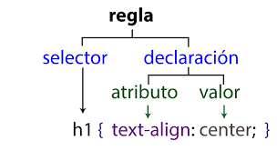

Hojas de estilo en cascada CSS
Recuperado de: piqsels.com
Qué son las hojas de estilo en cascada CSS
son las abreviaturas en inglés para Cascading Style Sheets (Hojas de Estilo en Cascada, en español). Esencialmente, es un lenguaje que rige el diseño y presentación de los sitios y páginas web, en otras palabras, cómo se ven cuando un usuario las visita. Trabaja junto al lenguaje HTML, que es el encargado del contenido básico de las páginas. CSS separa el contenido de la representación visual del sitio.
¿Qué son las Hojas de Estilo en Cascada CSS? (2023). Recuperado 10 de abril de 2023, de Arume website: https://lovtechnology.com/que-son-las-hojas-estilo-cascada/
Implementacion de CSS
Existen 3 maneras Inline, Externo e Interno
El estilo Interno, los estilos se cargan cada vez que hay una actualización en el sitio web, lo que puede aumentar el tiempo de carga. También no se podrá utilizar el mismos estilo CSS en múltiples páginas, porque se encuentran en una sola página.
La manera Externo es la más conveniente, todo se hace de manera externa en un fichero .css. Esto significa que puedes hacer todo el estilizado en un archivo separado y aplicar el CSS a cualquier página que se desea. La manera externa puede mejorar los tiempos de carga, esto se hace usando la eqtiqueta <"link">.
Y por último, el estilo Inline de CSS funciona con elementos específicos que contiene la etiqueta <"style">. Cada componente tiene que usado, por lo consiguiente no es la mejor manera, ni la más rápida para manejar CSS
Reglas CSS
Existe una estructura para codificar con estilos CSS la cual se compone de un selectores atribulos y valores.

Sintaxis CSS (2021). Recuperado 10 de abril de 2022, de aulaclic.es website: https://www.aulaclic.es/html/t_9_1.htm
Selector
Es cualquier elemeto de una pagina web al cual se le aplican ciertas declaraciones con la finalidad de dar estilos, un selector puede ser llamado a traves de una clase un ID, en la cual debe respectarse la sintaix, si se trata de una clase anteponemos el "." al nombre del selector, si es un ID, usamos el simbolo numeral "#"
ID & Class
Son atributos que se les aplica a los elementos html se diferencian en el uso que podemos darle, por ejemplo .Class puede aplicarse a multiples elementos mientras que ID solo aplica a un unico elemento.
Mas contenido